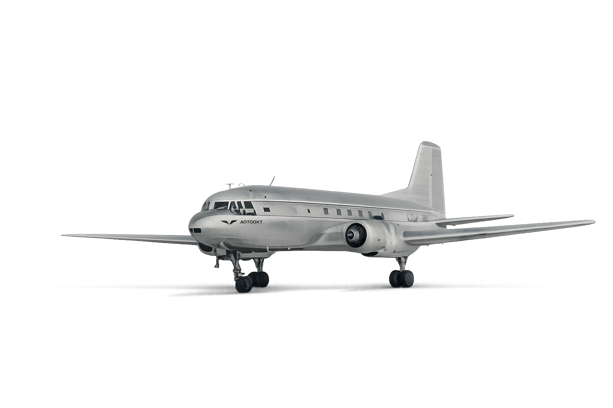
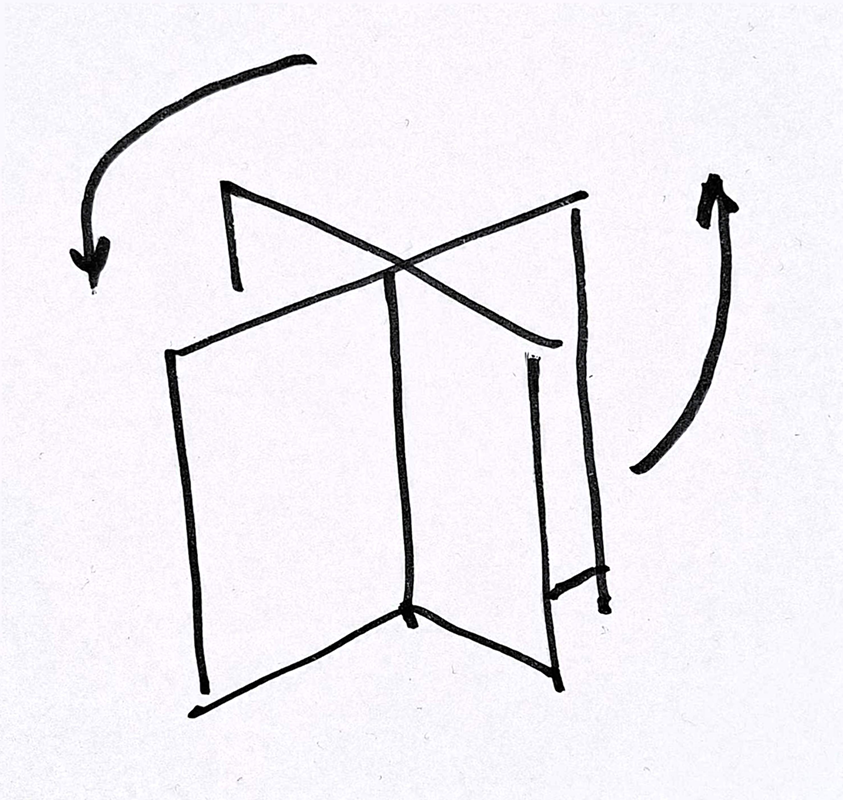

Spilve Airport
The first time you walk onto the tarmac at Spilve, you don't think about history. You look at your feet, because the asphalt is cracked and tufts of grass push up through the gaps, as if the ground were slowly taking back what had been taken from it. Ahead, the facade is still there: red-brown stone, a colonnade, a triangular pediment pointing at a sky where no scheduled flight has passed in almost fifty years. You could mistake the building for abandoned. It isn't, not really. It's waiting, which is a different thing. That's the in-between where a team settled in this summer not to reopen the airport, not to freeze it into a museum, but to work out what a place like this still has to say, provided you ask the right questions, and ask them in the right order.
1920 - 1940

Spilve starts in 1915, in the middle of a war, on a flat stretch of land north of Riga. Nothing remarkable about it at first: a makeshift airfield, chosen simply because the ground holds and the sky is clear. In the decade following Latvian independence, the site grows: it becomes the main base of the young country's military aviation, then a stop on civilian routes to Berlin, Moscow and Stockholm by the late 1920s. Twenty-five years in, and already two lives military first, then an airport starting to look like a real European crossroads.
1941 - 1960
The war catches up with Spilve. German occupation from 1941, then the Soviets return in 1944 and in between, fighting and bombing that leave the site badly damaged, its runways cratered. Reconstruction starts almost immediately, driven by a Soviet hand determined to turn the airport into a showcase. By 1954, a year after Stalin's death, the terminal we know today is complete: colonnade, triangular pediment, heavy symmetry. The rest of the decade sees Spilve running like any other Soviet airport disciplined, busy, oriented toward Moscow.
1961 - 1980
Two decades of ordinary life, then a turning point. Through the 1960s and into the early '70s, Spilve keeps running at full capacity for domestic and regional flights. But a bigger, more modern airport opens elsewhere, closer to the city centre. Between 1975 and 1980, Spilve loses its status for scheduled flights. The shift doesn't happen all at once more an airport emptying out, flight by flight, until the great hall under the columns grows too large for the few people still passing through.
1980 - Now
More than forty years of dormancy, with a few brief awakenings. The tarmac stops being maintained, grass gains ground, the water table rises without any regard for the plans once made for it. Birds nest where no one comes to disturb them anymore. In 2012, a partial renovation brings some colour back to one wing of the building, alongside talk of a Latvian aviation museum and the occasional event. And this summer, an interdisciplinary team arrives to lay six different perspectives on the same facade not to reopen it all at once, but to work out what it still has to say.